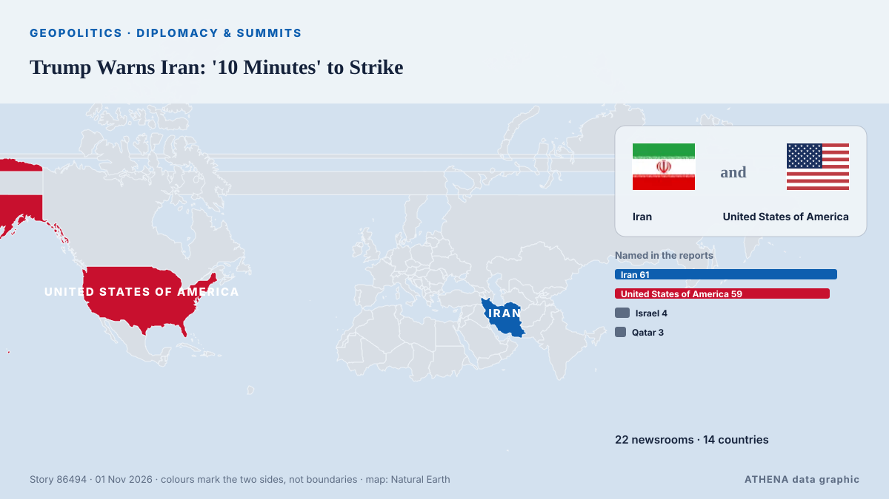

Trump Warns Iran: '10 Minutes' to Strike

US president signals possible attacks on remaining nuclear sites despite ongoing diplomatic efforts. von News of Bahrain
Unabhängig gemeldet von 22 Medien in 14 Ländern seit dem 31. Okt., zuerst von APA (English); die Berichterstattung ist auf dem Höhepunkt. ATHENA stuft das Risiko als erhöht ein (4.7/10), vor allem wegen der Schwere des beschriebenen Schadens und des Tempos der Berichterstattung. Die Konfidenz liegt bei 92 % (hoch): 22 Medien bestätigen es unabhängig, bei einer mittleren Verlässlichkeit der Quellen von 77 %. Medien nach Land: Türkei (3), Aserbaidschan (2), Vereinigte Arabische Emirate (2). Berichterstattung: 31. Okt. bis 1. Nov., 12 Stunden.
Warum es wichtig ist: Sicherheits- und diplomatische Entwicklungen können Bündnisse, Handel und Märkte weit über die direkt beteiligten Länder hinaus verschieben.
Was sich geändert hat: 25 neue Berichte von 22 Redaktionen in den 24 Stunden bis 1. Nov..
Erste Schlagzeile: Wong warns new US strikes on Iran would worsen global instability, protests
Schlagzeilen werden auf Englisch angezeigt, wie veröffentlicht.
Auf einen Blick
Ausgewählt, bewertet und geschrieben nach der veröffentlichten Methodik von ATHENA. Kein Redakteur greift in einzelne Ereignisse ein. So entsteht ATHENA ›
| 31 Oct 23:28 UTC | 1 |
|---|---|
| 01 Nov 00:28 UTC | 3 |
| 01 Nov 01:28 UTC | 4 |
| 01 Nov 02:28 UTC | 4 |
| 01 Nov 03:28 UTC | 1 |
| 01 Nov 04:28 UTC | 2 |
| 01 Nov 05:28 UTC | 3 |
| 01 Nov 06:28 UTC | 2 |
| 01 Nov 07:28 UTC | 1 |
| 01 Nov 08:28 UTC | 2 |
| 01 Nov 09:28 UTC | 1 |
| 01 Nov 10:28 UTC | 1 |
| 01 Nov 01:04 UTC | 1.4 |
|---|---|
| 01 Nov 11:35 UTC | 4.7 |
| 01 Nov 11:35 UTC | 4.7 |
Warum diese Zahlen
Bedeutung
Risiko
Konfidenz
Die Berichterstattung – wer berichtete, und wann
Schlagzeile wie veröffentlicht · öffnet das Original- APA (English) · AserbaidschanRezaei: US may use negotiations to buy time for strikes on Iran
- Sydney Morning Herald · AustralienWong warns new US strikes on Iran would worsen global instability, protests
- APA (English) · AserbaidschanTrump does not rule out new strikes on Iran
- Middle East Eye · INT'Negotiations going fine': Trump says Iran wants to make a deal
- The Korea Times · SüdkoreaTrump says US still has to 'take care' of one or two targets in Iran
- The Jerusalem Post · IsraelTrump says US ready to hit Iran's nuclear program 'in ten minutes' after speaking with Netanyahu
- Gulf News · Vereinigte Arabische EmirateMiddle East conflict: Trump says US still has to 'take care' of one or two targets in Iran
- Free Malaysia Today · MalaysiaTrump says US still has to ‘take care’ of one or two targets in Iran
- Arab News · Saudi-ArabienTrump says US still has to ‘take care’ of one or two targets in Iran
- RTÉ News · IrlandTrump says US still has 'one or two targets' in Iran
- TRT World · TürkeiUS still has to 'take care' of one or two targets in Iran — Trump
- The Straits Times · SingapurTrump says US still has ‘one or two targets’ in Iran
- Gulf News · Vereinigte Arabische EmirateTrump says US still has to 'take care' of one or two targets in Iran
- Kurdistan24 (English) · IrakTrump: Iran Sites Can Be Hit In 10 Minutes
- Shafaq News (English) · IrakTrump: US can hit Iran's nuclear program "in ten minutes"
- Türkiye Today · TürkeiIsrael prepares for renewed Iran strikes as Trump points to Pickaxe Mountain
- Punch · NigeriaUS still has ‘one or two targets’ in Iran — Trump
- Vanguard · NigeriaTrump says US still has ‘one or two targets’ in Iran
- TheJournal.ie · IrlandTrump says US still has 'one or two' targets remaining in Iran
- Al Jazeera English · KatarTrump at Halloween party ‘as himself’ says he’s ‘in no hurry’ with Iran
- Anadolu Agency (English) · TürkeiTrump says US could strike Iran's remaining nuclear sites in '10 minutes'
- The New Arab · INTTrump says US still has 'one or two targets' in Iran
- Asharq Al-Awsat (English) · Saudi-ArabienTrump Says US Still Has 'One or Two Targets' in Iran
- News of Bahrain · BahrainTrump Warns Iran: '10 Minutes' to Strike